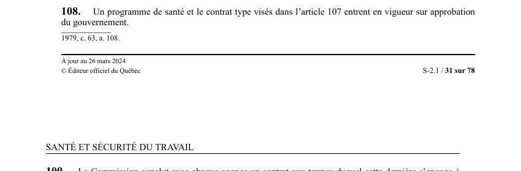

art-108-LSST : approbation gouvernementale des programmes de santé
Un article du wiki ⚖️ Recueil législatif
En bref
Verrou d'entrée en vigueur : tant que le gouvernement n'a pas approuvé, les instruments élaborés par la Commission ne produisent aucun effet.
- Deux instruments visés du même coup, et seulement ceux de l'art. 107 LSST : le programme de santé au travail et le contrat type.
- L'approbation n'est pas une formalité de publication : c'est la condition même de l'entrée en vigueur, et le moment de l'approbation fixe la date d'effet.
- Aucun délai n'est imposé au gouvernement, et la loi ne prévoit ici ni consultation obligatoire ni recours contre le refus d'approuver.
- Place dans la chaîne : élaboration par la Commission et transmission au ministre de la Santé (art. 107), approbation du gouvernement (art. 108), puis contrat avec chaque agence (art. 109).
🌐 LegisQuébec · 📄 PDF officiel (page 31)
Texte officiel
Un programme de santé et le contrat type visés dans l’article 107 entrent en vigueur sur approbation du gouvernement.
Texte de l’article 108 LSST, extrait de la couche texte du PDF officiel (page 31), sans OCR ni retouche. La capture ci-dessous et le PDF font foi.
{kind=link}

Toucher l'image pour l'agrandir🔗 Ouvrir a cette page : LSST.pdf : page 31 · texte a jour au 26 mars 2024
Voir aussi
- art. 106 : contrôle de l'usage des subventions · faculté : la Commission peut en tout temps exiger d'une association syndicale ou d'une association d'employeurs des renseignements sur l'utilisation des montants accordés.
- art. 107 : programmes santé travail Commission · la Commission élabore des programmes de santé au travail applicables aux territoires ou établissements qu'elle détermine, ainsi qu'un contrat type indiquant le contenu minimum des contrats avec les agences, soumis au ministre de la Santé et des Services sociaux.
- art. 109 : contrat Commission agence santé · la Commission conclut avec chaque agence un contrat l'engageant à assurer les services nécessaires à la mise en application des programmes de santé au travail sur son territoire ou pour les établissements identifiés, conformément au contrat type.
- art. 110 : budget annuel services santé · la Commission établit chaque année un budget pour l'application du chapitre relatif aux services de santé et en attribue une partie à chaque agence conformément au contrat, pour rémunérer le personnel et couvrir les coûts des examens et des locaux.
- ↑ Loi : LSST
Pages qui pointent ici (4)
- art-106-LSST : contrôle de l'usage des subventions syndicales et patronales Recueil législatif
- art-107-LSST : programmes de santé et contrat type Recueil législatif
- art-109-LSST : contrat Commission et agence de santé Recueil législatif
- art-110-LSST : budget annuel des services de santé Recueil législatif